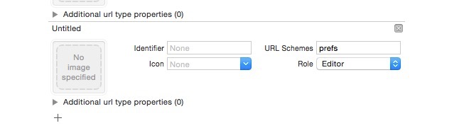

iOS小技巧总结，绝对有你想要的
http://www.jianshu.com/p/4523eafb4cd4
在这里总结一些iOS开发中的小技巧，能大大方便我们的开发，持续更新。
UITableView的Group样式下顶部空白处理
//分组列表头部空白处理
UIView *view = [[UIView alloc] initWithFrame:CGRectMake(0, 0, 0, 0.1)];
self.tableView.tableHeaderView = view;
UITableView的plain样式下，取消区头停滞效果
- (void)scrollViewDidScroll:(UIScrollView *)scrollView
{
CGFloat sectionHeaderHeight = sectionHead.height;
if (scrollView.contentOffset.y<=sectionHeaderHeight&&scrollView;.contentOffset.y>=0)
{
scrollView.contentInset = UIEdgeInsetsMake(-scrollView.contentOffset.y, 0, 0, 0);
}
else if(scrollView.contentOffset.y>=sectionHeaderHeight)
{
scrollView.contentInset = UIEdgeInsetsMake(-sectionHeaderHeight, 0, 0, 0);
}
}
获取某个view所在的控制器
- (UIViewController *)viewController
{
UIViewController *viewController = nil;
UIResponder *next = self.nextResponder;
while (next)
{
if ([next isKindOfClass:[UIViewController class]])
{
viewController = (UIViewController *)next;
break;
}
next = next.nextResponder;
}
return viewController;
}
两种方法删除NSUserDefaults所有记录
//方法一
NSString *appDomain = [[NSBundle mainBundle] bundleIdentifier];
[[NSUserDefaults standardUserDefaults] removePersistentDomainForName:appDomain];
//方法二
- (void)resetDefaults
{
NSUserDefaults * defs = [NSUserDefaults standardUserDefaults];
NSDictionary * dict = [defs dictionaryRepresentation];
for (id key in dict)
{
[defs removeObjectForKey:key];
}
[defs synchronize];
}
打印系统所有已注册的字体名称
void enumerateFonts()
{
for(NSString *familyName in [UIFont familyNames])
{
NSLog(@"%@",familyName);
NSArray *fontNames = [UIFont fontNamesForFamilyName:familyName];
for(NSString *fontName in fontNames)
{
NSLog(@"\t|- %@",fontName);
}
}
}
获取图片某一点的颜色
- (UIColor*) getPixelColorAtLocation:(CGPoint)point inImage:(UIImage *)image
{
UIColor* color = nil;
CGImageRef inImage = image.CGImage;
CGContextRef cgctx = [self createARGBBitmapContextFromImage:inImage];
if (cgctx == NULL) {
return nil; /* error */
}
size_t w = CGImageGetWidth(inImage);
size_t h = CGImageGetHeight(inImage);
CGRect rect = {{0,0},{w,h}};
CGContextDrawImage(cgctx, rect, inImage);
unsigned char* data = CGBitmapContextGetData (cgctx);
if (data != NULL) {
int offset = 4*((w*round(point.y))+round(point.x));
int alpha = data[offset];
int red = data[offset+1];
int green = data[offset+2];
int blue = data[offset+3];
color = [UIColor colorWithRed:(red/255.0f) green:(green/255.0f) blue:
(blue/255.0f) alpha:(alpha/255.0f)];
}
CGContextRelease(cgctx);
if (data) {
free(data);
}
return color;
}
字符串反转
第一种：
- (NSString *)reverseWordsInString:(NSString *)str
{
NSMutableString *newString = [[NSMutableString alloc] initWithCapacity:str.length];
for (NSInteger i = str.length - 1; i >= 0 ; i --)
{
unichar ch = [str characterAtIndex:i];
[newString appendFormat:@"%c", ch];
}
return newString;
}
//第二种：
- (NSString*)reverseWordsInString:(NSString*)str
{
NSMutableString *reverString = [NSMutableString stringWithCapacity:str.length];
[str enumerateSubstringsInRange:NSMakeRange(0, str.length) options:NSStringEnumerationReverse | NSStringEnumerationByComposedCharacterSequences usingBlock:^(NSString *substring, NSRange substringRange, NSRange enclosingRange, BOOL *stop) {
[reverString appendString:substring];
}];
return reverString;
}
禁止锁屏
默认情况下，当设备一段时间没有触控动作时，iOS会锁住屏幕。但有一些应用是不需要锁屏的，比如视频播放器。
[UIApplication sharedApplication].idleTimerDisabled = YES;
或
[[UIApplication sharedApplication] setIdleTimerDisabled:YES];
模态推出透明界面
UINavigationController *na = [[UINavigationController alloc] initWithRootViewController:vc];
if ([[[UIDevice currentDevice] systemVersion] floatValue] >= 8.0)
{
na.modalPresentationStyle = UIModalPresentationOverCurrentContext;
}
else
{
self.modalPresentationStyle=UIModalPresentationCurrentContext;
}
[self presentViewController:na animated:YES completion:nil];
Xcode调试不显示内存占用
editSCheme 里面有个选项叫叫做enable zoombie Objects 取消选中
显示隐藏文件
//显示
defaults write com.apple.finder AppleShowAllFiles -bool true
killall Finder
//隐藏
defaults write com.apple.finder AppleShowAllFiles -bool false
killall Finder
字符串按多个符号分割
NSString* str = @"a,b.c";
NSCharacterSet* set = [NSCharacterSet characterSetWithCharactersInString:@",."];
NSLog(@"%@",[str componentsSeparatedByCharactersInSet:set]);
iOS跳转到App Store下载应用评分
[[UIApplication sharedApplication] openURL:[NSURL URLWithString:@"itms-apps://itunes.apple.com/WebObjects/MZStore.woa/wa/viewContentsUserReviews?type=Purple+Software&id=APPID"]];
iOS 获取汉字的拼音
+ (NSString *)transform:(NSString *)chinese
{
//将NSString装换成NSMutableString
NSMutableString *pinyin = [chinese mutableCopy];
//将汉字转换为拼音(带音标)
CFStringTransform((__bridge CFMutableStringRef)pinyin, NULL, kCFStringTransformMandarinLatin, NO);
NSLog(@"%@", pinyin);
//去掉拼音的音标
CFStringTransform((__bridge CFMutableStringRef)pinyin, NULL, kCFStringTransformStripCombiningMarks, NO);
NSLog(@"%@", pinyin);
//返回最近结果
return pinyin;
}
手动更改iOS状态栏的颜色
- (void)setStatusBarBackgroundColor:(UIColor *)color
{
UIView *statusBar = [[[UIApplication sharedApplication] valueForKey:@"statusBarWindow"] valueForKey:@"statusBar"];
if ([statusBar respondsToSelector:@selector(setBackgroundColor:)])
{
statusBar.backgroundColor = color;
}
}
判断当前ViewController是push还是present的方式显示的
NSArray *viewcontrollers=self.navigationController.viewControllers;
if (viewcontrollers.count > 1)
{
if ([viewcontrollers objectAtIndex:viewcontrollers.count - 1] == self)
{
//push方式
[self.navigationController popViewControllerAnimated:YES];
}
}
else
{
//present方式
[self dismissViewControllerAnimated:YES completion:nil];
}
获取实际使用的LaunchImage图片
- (NSString *)getLaunchImageName
{
CGSize viewSize = self.window.bounds.size;
// 竖屏
NSString *viewOrientation = @"Portrait";
NSString *launchImageName = nil;
NSArray* imagesDict = [[[NSBundle mainBundle] infoDictionary] valueForKey:@"UILaunchImages"];
for (NSDictionary* dict in imagesDict)
{
CGSize imageSize = CGSizeFromString(dict[@"UILaunchImageSize"]);
if (CGSizeEqualToSize(imageSize, viewSize) && [viewOrientation isEqualToString:dict[@"UILaunchImageOrientation"]])
{
launchImageName = dict[@"UILaunchImageName"];
}
}
return launchImageName;
}
iOS在当前屏幕获取第一响应
UIWindow * keyWindow = [[UIApplication sharedApplication] keyWindow];
UIView * firstResponder = [keyWindow performSelector:@selector(firstResponder)];
判断对象是否遵循了某协议
if ([self.selectedController conformsToProtocol:@protocol(RefreshPtotocol)])
{
[self.selectedController performSelector:@selector(onTriggerRefresh)];
}
判断view是不是指定视图的子视图
BOOL isView = [textView isDescendantOfView:self.view];
NSArray 快速求总和 最大值 最小值 和 平均值
NSArray *array = [NSArray arrayWithObjects:@"2.0", @"2.3", @"3.0", @"4.0", @"10", nil];
CGFloat sum = [[array valueForKeyPath:@"@sum.floatValue"] floatValue];
CGFloat avg = [[array valueForKeyPath:@"@avg.floatValue"] floatValue];
CGFloat max =[[array valueForKeyPath:@"@max.floatValue"] floatValue];
CGFloat min =[[array valueForKeyPath:@"@min.floatValue"] floatValue];
NSLog(@"%f\n%f\n%f\n%f",sum,avg,max,min);
修改UITextField中Placeholder的文字颜色
[textField setValue:[UIColor redColor] forKeyPath:@"_placeholderLabel.textColor"];
关于NSDateFormatter的格式
G: 公元时代，例如AD公元
yy: 年的后2位
yyyy: 完整年
MM: 月，显示为1-12
MMM: 月，显示为英文月份简写,如 Jan
MMMM: 月，显示为英文月份全称，如 Janualy
dd: 日，2位数表示，如02
d: 日，1-2位显示，如 2
EEE: 简写星期几，如Sun
EEEE: 全写星期几，如Sunday
aa: 上下午，AM/PM
H: 时，24小时制，0-23
K：时，12小时制，0-11
m: 分，1-2位
mm: 分，2位
s: 秒，1-2位
ss: 秒，2位
S: 毫秒
获取一个类的所有子类
+ (NSArray *) allSubclasses
{
Class myClass = [self class];
NSMutableArray *mySubclasses = [NSMutableArray array];
unsigned int numOfClasses;
Class *classes = objc_copyClassList(&numOfClasses;);
for (unsigned int ci = 0; ci < numOfClasses; ci++)
{
Class superClass = classes[ci];
do{
superClass = class_getSuperclass(superClass);
} while (superClass && superClass != myClass);
if (superClass)
{
[mySubclasses addObject: classes[ci]];
}
}
free(classes);
return mySubclasses;
}
监测IOS设备是否设置了代理，需要CFNetwork.framework
NSDictionary *proxySettings = (__bridge NSDictionary *)(CFNetworkCopySystemProxySettings());
NSArray *proxies = (__bridge NSArray *)(CFNetworkCopyProxiesForURL((__bridge CFURLRef _Nonnull)([NSURL URLWithString:@"http://www.baidu.com"]), (__bridge CFDictionaryRef _Nonnull)(proxySettings)));
NSLog(@"\n%@",proxies);
NSDictionary *settings = proxies[0];
NSLog(@"%@",[settings objectForKey:(NSString *)kCFProxyHostNameKey]);
NSLog(@"%@",[settings objectForKey:(NSString *)kCFProxyPortNumberKey]);
NSLog(@"%@",[settings objectForKey:(NSString *)kCFProxyTypeKey]);
if ([[settings objectForKey:(NSString *)kCFProxyTypeKey] isEqualToString:@"kCFProxyTypeNone"])
{
NSLog(@"没代理");
}
else
{
NSLog(@"设置了代理");
}
阿拉伯数字转中文格式
+(NSString *)translation:(NSString *)arebic
{
NSString *str = arebic;
NSArray *arabic_numerals = @[@"1",@"2",@"3",@"4",@"5",@"6",@"7",@"8",@"9",@"0"];
NSArray *chinese_numerals = @[@"一",@"二",@"三",@"四",@"五",@"六",@"七",@"八",@"九",@"零"];
NSArray *digits = @[@"个",@"十",@"百",@"千",@"万",@"十",@"百",@"千",@"亿",@"十",@"百",@"千",@"兆"];
NSDictionary *dictionary = [NSDictionary dictionaryWithObjects:chinese_numerals forKeys:arabic_numerals];
NSMutableArray *sums = [NSMutableArray array];
for (int i = 0; i < str.length; i ++) {
NSString *substr = [str substringWithRange:NSMakeRange(i, 1)];
NSString *a = [dictionary objectForKey:substr];
NSString *b = digits[str.length -i-1];
NSString *sum = [a stringByAppendingString:b];
if ([a isEqualToString:chinese_numerals[9]])
{
if([b isEqualToString:digits[4]] || [b isEqualToString:digits[8]])
{
sum = b;
if ([[sums lastObject] isEqualToString:chinese_numerals[9]])
{
[sums removeLastObject];
}
}else
{
sum = chinese_numerals[9];
}
if ([[sums lastObject] isEqualToString:sum])
{
continue;
}
}
[sums addObject:sum];
}
NSString *sumStr = [sums componentsJoinedByString:@""];
NSString *chinese = [sumStr substringToIndex:sumStr.length-1];
NSLog(@"%@",str);
NSLog(@"%@",chinese);
return chinese;
}
Base64编码与NSString对象或NSData对象的转换
// Create NSData object
NSData *nsdata = [@"iOS Developer Tips encoded in Base64"
dataUsingEncoding:NSUTF8StringEncoding];
// Get NSString from NSData object in Base64
NSString *base64Encoded = [nsdata base64EncodedStringWithOptions:0];
// Print the Base64 encoded string
NSLog(@"Encoded: %@", base64Encoded);
// Let's go the other way...
// NSData from the Base64 encoded str
NSData *nsdataFromBase64String = [[NSData alloc]
initWithBase64EncodedString:base64Encoded options:0];
// Decoded NSString from the NSData
NSString *base64Decoded = [[NSString alloc]
initWithData:nsdataFromBase64String encoding:NSUTF8StringEncoding];
NSLog(@"Decoded: %@", base64Decoded);
取消UICollectionView的隐式动画
UICollectionView在reloadItems的时候，默认会附加一个隐式的fade动画，有时候很讨厌，尤其是当你的cell是复合cell的情况下(比如cell使用到了UIStackView)。
下面几种方法都可以帮你去除这些动画
//方法一
[UIView performWithoutAnimation:^{
[collectionView reloadItemsAtIndexPaths:@[[NSIndexPath indexPathForItem:index inSection:0]]];
}];
//方法二
[UIView animateWithDuration:0 animations:^{
[collectionView performBatchUpdates:^{
[collectionView reloadItemsAtIndexPaths:@[[NSIndexPath indexPathForItem:index inSection:0]]];
} completion:nil];
}];
//方法三
[UIView setAnimationsEnabled:NO];
[self.trackPanel performBatchUpdates:^{
[collectionView reloadItemsAtIndexPaths:@[[NSIndexPath indexPathForItem:index inSection:0]]];
} completion:^(BOOL finished) {
[UIView setAnimationsEnabled:YES];
}];
让Xcode的控制台支持LLDB类型的打印
打开终端输入三条命令:
touch ~/.lldbinit
echo display @import UIKit >> ~/.lldbinit
echo target stop-hook add -o \"target stop-hook disable\" >> ~/.lldbinit
UIImage 占用内存大小
UIImage *image = [UIImage imageNamed:@"aa"];
NSUInteger size = CGImageGetHeight(image.CGImage) * CGImageGetBytesPerRow(image.CGImage);
GCD timer定时器
dispatch_queue_t queue = dispatch_get_global_queue(DISPATCH_QUEUE_PRIORITY_DEFAULT, 0);
dispatch_source_t timer = dispatch_source_create(DISPATCH_SOURCE_TYPE_TIMER, 0, 0,queue);
dispatch_source_set_timer(timer,dispatch_walltime(NULL, 0),1.0*NSEC_PER_SEC, 0); //每秒执行
dispatch_source_set_event_handler(timer, ^{
//@"倒计时结束，关闭"
dispatch_source_cancel(timer);
dispatch_async(dispatch_get_main_queue(), ^{
});
});
dispatch_resume(timer);
图片上绘制文字 写一个UIImage的category
- (UIImage *)imageWithTitle:(NSString *)title fontSize:(CGFloat)fontSize
{
//画布大小
CGSize size=CGSizeMake(self.size.width,self.size.height);
//创建一个基于位图的上下文
UIGraphicsBeginImageContextWithOptions(size,NO,0.0);//opaque:NO scale:0.0
[self drawAtPoint:CGPointMake(0.0,0.0)];
//文字居中显示在画布上
NSMutableParagraphStyle* paragraphStyle = [[NSParagraphStyle defaultParagraphStyle] mutableCopy];
paragraphStyle.lineBreakMode = NSLineBreakByCharWrapping;
paragraphStyle.alignment=NSTextAlignmentCenter;//文字居中
//计算文字所占的size,文字居中显示在画布上
CGSize sizeText=[title boundingRectWithSize:self.size options:NSStringDrawingUsesLineFragmentOrigin
attributes:@{NSFontAttributeName:[UIFont systemFontOfSize:fontSize]}context:nil].size;
CGFloat width = self.size.width;
CGFloat height = self.size.height;
CGRect rect = CGRectMake((width-sizeText.width)/2, (height-sizeText.height)/2, sizeText.width, sizeText.height);
//绘制文字
[title drawInRect:rect withAttributes:@{ NSFontAttributeName:[UIFont systemFontOfSize:fontSize],NSForegroundColorAttributeName:[ UIColor whiteColor],NSParagraphStyleAttributeName:paragraphStyle}];
//返回绘制的新图形
UIImage *newImage= UIGraphicsGetImageFromCurrentImageContext();
UIGraphicsEndImageContext();
return newImage;
}
查找一个视图的所有子视图
- (NSMutableArray *)allSubViewsForView:(UIView *)view
{
NSMutableArray *array = [NSMutableArray arrayWithCapacity:0];
for (UIView *subView in view.subviews)
{
[array addObject:subView];
if (subView.subviews.count > 0)
{
[array addObjectsFromArray:[self allSubViewsForView:subView]];
}
}
return array;
}
计算文件大小
//文件大小
- (long long)fileSizeAtPath:(NSString *)path
{
NSFileManager *fileManager = [NSFileManager defaultManager];
if ([fileManager fileExistsAtPath:path])
{
long long size = [fileManager attributesOfItemAtPath:path error:nil].fileSize;
return size;
}
return 0;
}
//文件夹大小
- (long long)folderSizeAtPath:(NSString *)path
{
NSFileManager *fileManager = [NSFileManager defaultManager];
long long folderSize = 0;
if ([fileManager fileExistsAtPath:path])
{
NSArray *childerFiles = [fileManager subpathsAtPath:path];
for (NSString *fileName in childerFiles)
{
NSString *fileAbsolutePath = [path stringByAppendingPathComponent:fileName];
if ([fileManager fileExistsAtPath:fileAbsolutePath])
{
long long size = [fileManager attributesOfItemAtPath:fileAbsolutePath error:nil].fileSize;
folderSize += size;
}
}
}
return folderSize;
}
UIView设置部分圆角
你是不是也遇到过这样的问题，一个button或者label，只要右边的两个角圆角，或者只要一个圆角。该怎么办呢。这就需要图层蒙版来帮助我们了
CGRect rect = view.bounds;
CGSize radio = CGSizeMake(30, 30);//圆角尺寸
UIRectCorner corner = UIRectCornerTopLeft|UIRectCornerTopRight;//这只圆角位置
UIBezierPath *path = [UIBezierPath bezierPathWithRoundedRect:rect byRoundingCorners:corner cornerRadii:radio];
CAShapeLayer *masklayer = [[CAShapeLayer alloc]init];//创建shapelayer
masklayer.frame = view.bounds;
masklayer.path = path.CGPath;//设置路径
view.layer.mask = masklayer;
取上整与取下整
floor(x),有时候也写做Floor(x)，其功能是“下取整”，即取不大于x的最大整数 例如：
x=3.14，floor(x)=3
y=9.99999，floor(y)=9
与floor函数对应的是ceil函数，即上取整函数。
ceil函数的作用是求不小于给定实数的最小整数。
ceil(2)=ceil(1.2)=cei(1.5)=2.00
floor函数与ceil函数的返回值均为double型
计算字符串字符长度，一个汉字算两个字符
//方法一：
- (int)convertToInt:(NSString*)strtemp
{
int strlength = 0;
char* p = (char*)[strtemp cStringUsingEncoding:NSUnicodeStringEncoding];
for (int i=0 ; i<[strtemp lengthOfBytesUsingEncoding:NSUnicodeStringEncoding] ;i++)
{
if (*p)
{
p++;
strlength++;
}
else
{
p++;
}
}
return strlength;
}
//方法二：
-(NSUInteger) unicodeLengthOfString: (NSString *) text
{
NSUInteger asciiLength = 0;
for (NSUInteger i = 0; i < text.length; i++)
{
unichar uc = [text characterAtIndex: i];
asciiLength += isascii(uc) ? 1 : 2;
}
return asciiLength;
}
给UIView设置图片
UIImage *image = [UIImage imageNamed:@"image"];
self.MYView.layer.contents = (__bridge id _Nullable)(image.CGImage);
self.MYView.layer.contentsRect = CGRectMake(0, 0, 0.5, 0.5);
防止scrollView手势覆盖侧滑手势
[scrollView.panGestureRecognizerrequireGestureRecognizerToFail:self.navigationController.interactivePopGestureRecognizer];
去掉导航栏返回的back标题
[[UIBarButtonItem appearance]setBackButtonTitlePositionAdjustment:UIOffsetMake(0, -60)forBarMetrics:UIBarMetricsDefault];
字符串中是否含有中文
+ (BOOL)checkIsChinese:(NSString *)string
{
for (int i=0; i<string.length; i++)
{
unichar ch = [string characterAtIndex:i];
if (0x4E00 <= ch && ch <= 0x9FA5)
{
return YES;
}
}
return NO;
}
dispatch_group的使用
dispatch_group_t dispatchGroup = dispatch_group_create();
dispatch_group_enter(dispatchGroup);
dispatch_after(dispatch_time(DISPATCH_TIME_NOW, (int64_t)(1 * NSEC_PER_SEC)), dispatch_get_main_queue(), ^{
NSLog(@"第一个请求完成");
dispatch_group_leave(dispatchGroup);
});
dispatch_group_enter(dispatchGroup);
dispatch_after(dispatch_time(DISPATCH_TIME_NOW, (int64_t)(10 * NSEC_PER_SEC)), dispatch_get_main_queue(), ^{
NSLog(@"第二个请求完成");
dispatch_group_leave(dispatchGroup);
});
dispatch_group_notify(dispatchGroup, dispatch_get_main_queue(), ^(){
NSLog(@"请求完成");
});
UITextField每四位加一个空格,实现代理
- (BOOL)textField:(UITextField *)textField shouldChangeCharactersInRange:(NSRange)range replacementString:(NSString *)string
{
// 四位加一个空格
if ([string isEqualToString:@""])
{
// 删除字符
if ((textField.text.length - 2) % 5 == 0)
{
textField.text = [textField.text substringToIndex:textField.text.length - 1];
}
return YES;
}
else
{
if (textField.text.length % 5 == 0)
{
textField.text = [NSString stringWithFormat:@"%@ ", textField.text];
}
}
return YES;
}
获取私有属性和成员变量 #import
//获取私有属性 比如设置UIDatePicker的字体颜色
- (void)setTextColor
{
//获取所有的属性，去查看有没有对应的属性
unsigned int count = 0;
objc_property_t *propertys = class_copyPropertyList([UIDatePicker class], &count);
for(int i = 0;i < count;i ++)
{
//获得每一个属性
objc_property_t property = propertys[i];
//获得属性对应的nsstring
NSString *propertyName = [NSString stringWithCString:property_getName(property) encoding:NSUTF8StringEncoding];
//输出打印看对应的属性
NSLog(@"propertyname = %@",propertyName);
if ([propertyName isEqualToString:@"textColor"])
{
[datePicker setValue:[UIColor whiteColor] forKey:propertyName];
}
}
}
//获得成员变量 比如修改UIAlertAction的按钮字体颜色
unsigned int count = 0;
Ivar *ivars = class_copyIvarList([UIAlertAction class], &count);
for(int i =0;i < count;i ++)
{
Ivar ivar = ivars[i];
NSString *ivarName = [NSString stringWithCString:ivar_getName(ivar) encoding:NSUTF8StringEncoding];
NSLog(@"uialertion.ivarName = %@",ivarName);
if ([ivarName isEqualToString:@"_titleTextColor"])
{
[alertOk setValue:[UIColor blueColor] forKey:@"titleTextColor"];
[alertCancel setValue:[UIColor purpleColor] forKey:@"titleTextColor"];
}
}
获取手机安装的应用
Class c =NSClassFromString(@"LSApplicationWorkspace");
id s = [(id)c performSelector:NSSelectorFromString(@"defaultWorkspace")];
NSArray *array = [s performSelector:NSSelectorFromString(@"allInstalledApplications")];
for (id item in array)
{
NSLog(@"%@",[item performSelector:NSSelectorFromString(@"applicationIdentifier")]);
//NSLog(@"%@",[item performSelector:NSSelectorFromString(@"bundleIdentifier")]);
NSLog(@"%@",[item performSelector:NSSelectorFromString(@"bundleVersion")]);
NSLog(@"%@",[item performSelector:NSSelectorFromString(@"shortVersionString")]);
}
判断两个日期是否在同一周 写在NSDate的category里面
- (BOOL)isSameDateWithDate:(NSDate *)date
{
//日期间隔大于七天之间返回NO
if (fabs([self timeIntervalSinceDate:date]) >= 7 * 24 *3600)
{
return NO;
}
NSCalendar *calender = [NSCalendar currentCalendar];
calender.firstWeekday = 2;//设置每周第一天从周一开始
//计算两个日期分别为这年第几周
NSUInteger countSelf = [calender ordinalityOfUnit:NSCalendarUnitWeekday inUnit:NSCalendarUnitYear forDate:self];
NSUInteger countDate = [calender ordinalityOfUnit:NSCalendarUnitWeekday inUnit:NSCalendarUnitYear forDate:date];
//相等就在同一周，不相等就不在同一周
return countSelf == countDate;
}
应用内打开系统设置界面
//iOS8之后
[[UIApplication sharedApplication] openURL:[NSURL URLWithString:UIApplicationOpenSettingsURLString]];
//如果App没有添加权限，显示的是设定界面。如果App有添加权限（例如通知），显示的是App的设定界面。
//iOS8之前
//先添加一个url type如下图，在代码中调用如下代码,即可跳转到设置页面的对应项
[[UIApplication sharedApplication] openURL:[NSURL URLWithString:@"prefs:root=WIFI"]];
可选值如下：
About — prefs:root=General&path=About
Accessibility — prefs:root=General&path=ACCESSIBILITY
Airplane Mode On — prefs:root=AIRPLANE_MODE
Auto-Lock — prefs:root=General&path=AUTOLOCK
Brightness — prefs:root=Brightness
Bluetooth — prefs:root=General&path=Bluetooth
Date & Time — prefs:root=General&path=DATE_AND_TIME
FaceTime — prefs:root=FACETIME
General — prefs:root=General
Keyboard — prefs:root=General&path=Keyboard
iCloud — prefs:root=CASTLE
iCloud Storage & Backup — prefs:root=CASTLE&path=STORAGE_AND_BACKUP
International — prefs:root=General&path=INTERNATIONAL
Location Services — prefs:root=LOCATION_SERVICES
Music — prefs:root=MUSIC
Music Equalizer — prefs:root=MUSIC&path=EQ
Music Volume Limit — prefs:root=MUSIC&path=VolumeLimit
Network — prefs:root=General&path=Network
Nike + iPod — prefs:root=NIKE_PLUS_IPOD
Notes — prefs:root=NOTES
Notification — prefs:root=NOTIFICATI*****_ID
Phone — prefs:root=Phone
Photos — prefs:root=Photos
Profile — prefs:root=General&path=ManagedConfigurationList
Reset — prefs:root=General&path=Reset
Safari — prefs:root=Safari
Siri — prefs:root=General&path=Assistant
Sounds — prefs:root=Sounds
Software Update — prefs:root=General&path=SOFTWARE_UPDATE_LINK
Store — prefs:root=STORE
Twitter — prefs:root=TWITTER
Usage — prefs:root=General&path=USAGE
VPN — prefs:root=General&path=Network/VPN
Wallpaper — prefs:root=Wallpaper
Wi-Fi — prefs:root=WIFI

动画暂停再开始
-(void)pauseLayer:(CALayer *)layer
{
CFTimeInterval pausedTime = [layer convertTime:CACurrentMediaTime() fromLayer:nil];
layer.speed = 0.0;
layer.timeOffset = pausedTime;
}
-(void)resumeLayer:(CALayer *)layer
{
CFTimeInterval pausedTime = [layer timeOffset];
layer.speed = 1.0;
layer.timeOffset = 0.0;
layer.beginTime = 0.0;
CFTimeInterval timeSincePause = [layer convertTime:CACurrentMediaTime() fromLayer:nil] - pausedTime;
layer.beginTime = timeSincePause;
}
iOS中数字的格式化
//通过NSNumberFormatter，同样可以设置NSNumber输出的格式。例如如下代码：
NSNumberFormatter *formatter = [[NSNumberFormatter alloc] init];
formatter.numberStyle = NSNumberFormatterDecimalStyle;
NSString *string = [formatter stringFromNumber:[NSNumber numberWithInt:123456789]];
NSLog(@"Formatted number string:%@",string);
//输出结果为：[1223:403] Formatted number string:123,456,789
//其中NSNumberFormatter类有个属性numberStyle，它是一个枚举型，设置不同的值可以输出不同的数字格式。该枚举包括：
typedef NS_ENUM(NSUInteger, NSNumberFormatterStyle) {
NSNumberFormatterNoStyle = kCFNumberFormatterNoStyle,
NSNumberFormatterDecimalStyle = kCFNumberFormatterDecimalStyle,
NSNumberFormatterCurrencyStyle = kCFNumberFormatterCurrencyStyle,
NSNumberFormatterPercentStyle = kCFNumberFormatterPercentStyle,
NSNumberFormatterScientificStyle = kCFNumberFormatterScientificStyle,
NSNumberFormatterSpellOutStyle = kCFNumberFormatterSpellOutStyle
};
//各个枚举对应输出数字格式的效果如下：其中第三项和最后一项的输出会根据系统设置的语言区域的不同而不同。
[1243:403] Formatted number string:123456789
[1243:403] Formatted number string:123,456,789
[1243:403] Formatted number string:￥123,456,789.00
[1243:403] Formatted number string:-539,222,988%
[1243:403] Formatted number string:1.23456789E8
[1243:403] Formatted number string:一亿二千三百四十五万六千七百八十九
如何获取WebView所有的图片地址
在网页加载完成时，通过js获取图片和添加点击的识别方式
//UIWebView
- (void)webViewDidFinishLoad:(UIWebView *)webView
{
//这里是js，主要目的实现对url的获取
static NSString * const jsGetImages =
@"function getImages(){\
var objs = document.getElementsByTagName(\"img\");\
var imgScr = '';\
for(var i=0;i<objs.length;i++){\
imgScr = imgScr + objs[i].src + '+';\
};\
return imgScr;\
};";
[webView stringByEvaluatingJavaScriptFromString:jsGetImages];//注入js方法
NSString *urlResult = [webView stringByEvaluatingJavaScriptFromString:@"getImages()"];
NSArray *urlArray = [NSMutableArray arrayWithArray:[urlResult componentsSeparatedByString:@"+"]];
//urlResurlt 就是获取到得所有图片的url的拼接；mUrlArray就是所有Url的数组
}
//WKWebView
- (void)webView:(WKWebView *)webView didFinishNavigation:(null_unspecified WKNavigation *)navigation
{
static NSString * const jsGetImages =
@"function getImages(){\
var objs = document.getElementsByTagName(\"img\");\
var imgScr = '';\
for(var i=0;i<objs.length;i++){\
imgScr = imgScr + objs[i].src + '+';\
};\
return imgScr;\
};";
[webView evaluateJavaScript:jsGetImages completionHandler:nil];
[webView evaluateJavaScript:@"getImages()" completionHandler:^(id _Nullable result, NSError * _Nullable error) {
NSLog(@"%@",result);
}];
}
获取到webview的高度
CGFloat height = [[self.webView stringByEvaluatingJavaScriptFromString:@"document.body.offsetHeight"] floatValue];
navigationBar变为纯透明
//第一种方法
//导航栏纯透明
[self.navigationBar setBackgroundImage:[UIImage new] forBarMetrics:UIBarMetricsDefault];
//去掉导航栏底部的黑线
self.navigationBar.shadowImage = [UIImage new];
//第二种方法
[[self.navigationBar subviews] objectAtIndex:0].alpha = 0;
tabBar同理
[self.tabBar setBackgroundImage:[UIImage new]];
self.tabBar.shadowImage = [UIImage new];
navigationBar根据滑动距离的渐变色实现
//第一种
- (void)scrollViewDidScroll:(UIScrollView *)scrollView
{
CGFloat offsetToShow = 200.0;//滑动多少就完全显示
CGFloat alpha = 1 - (offsetToShow - scrollView.contentOffset.y) / offsetToShow;
[[self.navigationController.navigationBar subviews] objectAtIndex:0].alpha = alpha;
}
//第二种
- (void)scrollViewDidScroll:(UIScrollView *)scrollView
{
CGFloat offsetToShow = 200.0;
CGFloat alpha = 1 - (offsetToShow - scrollView.contentOffset.y) / offsetToShow;
[self.navigationController.navigationBar setShadowImage:[UIImage new]];
[self.navigationController.navigationBar setBackgroundImage:[self imageWithColor:[[UIColor orangeColor]colorWithAlphaComponent:alpha]] forBarMetrics:UIBarMetricsDefault];
}
//生成一张纯色的图片
- (UIImage *)imageWithColor:(UIColor *)color
{
CGRect rect = CGRectMake(0.0f, 0.0f, 1.0f, 1.0f);
UIGraphicsBeginImageContext(rect.size);
CGContextRef context = UIGraphicsGetCurrentContext();
CGContextSetFillColorWithColor(context, [color CGColor]);
CGContextFillRect(context, rect);
UIImage *theImage = UIGraphicsGetImageFromCurrentImageContext();
UIGraphicsEndImageContext();
return theImage;
}
iOS 开发中一些相关的路径
模拟器的位置:
/Applications/Xcode.app/Contents/Developer/Platforms/iPhoneSimulator.platform/Developer/SDKs
文档安装位置:
/Applications/Xcode.app/Contents/Developer/Documentation/DocSets
插件保存路径:
~/Library/ApplicationSupport/Developer/Shared/Xcode/Plug-ins
自定义代码段的保存路径:
~/Library/Developer/Xcode/UserData/CodeSnippets/
如果找不到CodeSnippets文件夹，可以自己新建一个CodeSnippets文件夹。
描述文件路径
~/Library/MobileDevice/Provisioning Profiles
navigationItem的BarButtonItem如何紧靠屏幕右边界或者左边界
UIImage *img = [[UIImage imageNamed:@"icon_cog"] imageWithRenderingMode:UIImageRenderingModeAlwaysOriginal];
//宽度为负数的固定间距的系统item
UIBarButtonItem *rightNegativeSpacer = [[UIBarButtonItem alloc] initWithBarButtonSystemItem:UIBarButtonSystemItemFixedSpace target:nil action:nil];
[rightNegativeSpacer setWidth:-15];
UIBarButtonItem *rightBtnItem1 = [[UIBarButtonItem alloc]initWithImage:img style:UIBarButtonItemStylePlain target:self action:@selector(rightButtonItemClicked:)];
UIBarButtonItem *rightBtnItem2 = [[UIBarButtonItem alloc]initWithImage:img style:UIBarButtonItemStylePlain target:self action:@selector(rightButtonItemClicked:)];
self.navigationItem.rightBarButtonItems = @[rightNegativeSpacer,rightBtnItem1,rightBtnItem2];
Copyright © 2017 通过 MWeb制作 沪ICP备15015428号-1